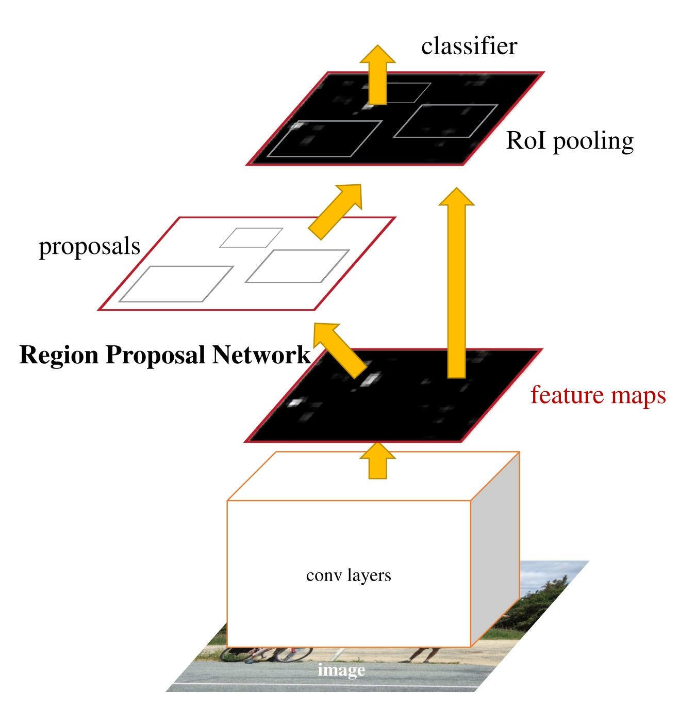
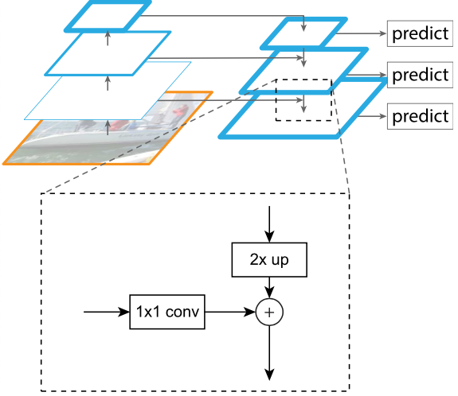

Write down how is \(AP_{50}\) computed. [5]
Considering a Fast-RCNN architecture, draw overall network architecture, explain what a RoI-pooling layer is, show how the network parametrizes bounding boxes and write down the loss. Finally, describe non-maximum suppression and how is the Fast-RCNN prediction performed. [10]
RoI rozdělím na 7x7 binů, každý z nich zaokrouhlím na původní 14x14 reprezentaci (viz obrázek níže) a jen z nich udělám max pooling (čímž jeden ze 7x7 binů).
Pozice je dána relativně k RoI. Konkrétně \[ \begin{aligned} t_{x} &=\left(x-x_{r}\right) / w_{r}, \quad t_{y}=\left(y-y_{r}\right) / h_{r} \\ t_{w} &=\log \left(w / w_{r}\right), \quad t_{h}=\log \left(h / h_{r}\right) \end{aligned} \] Logaritmy jsou ve \(w\) a \(h\) proto, že zmenšují range generovaných čísel (což ej pro síť vždycky fajn).
Pro bbox se používá tzv. Huber loss, která se stará o gradient clipping. \[ \operatorname{smooth}_{L_{1}}(x)=\left\{\begin{array}{ll} 0.5 x^{2} & \text { if }|x|<1 \\ |x|-0.5 & \text { otherwise } \end{array}\right. \]

Celková loss ještě počítá s loss za klasifikaci, s tím, že loss za bbox se počítá jen pro “opravdové” třídy (tedy nesnažíme se bbox dávat kolem třídy “nic”), \[ L(\hat{c}, \hat{t}, c, t)=L_{\mathrm{cls}}(\hat{c}, c)+\lambda \cdot[c \geq 1] \cdot \sum_{i \in\{\mathrm{x}, \mathrm{y}, \mathrm{w}, \mathrm{h}\}} \operatorname{smooth}_{L_{1}}\left(\hat{t}_{i}-t_{i}\right) \]
Non-maximum supression se stará o to, aby se nám jeden objekt nezahlásil v několika různých RoI. Ignoruje RoI, které mají IoU nad nějakou hranicí s jiným RoI ze stejné třídy, který je lepší. Lepší jsou takové RoI, které mají vyšší pnost správné třídy.
Considering a Faster-RCNN architecture, describe the region proposal network (its architecture, what are anchors, what does the loss look like). [5]

Hlavy tedy trénujeme tak, aby správně předpovídaly třídu z (2) a (3), popř. ještě bbox těch “opravdových” objektů.
Considering Mask-RCNN architecture, describe the additions to a Faster-RCNN architecture (the RoI-Align layer, the new mask-producing head). [5]
RoI Pooling je nahrazen RoI Align. Každý ze 7x7 binů si rozdělíme na 4 podbiny, a jejich hodnoty získáme bilineární interpolací hodnot z původní reprezentace 14x14. Tyto čtyři podbiny se zkombinují do finální hodnoty.
Pro vytvoření masky nejprve upscalujeme 7x7 reprezentaci zpět na 14x14, nebo 28x28. Poslední maskující konvoluce má tolik kanálů, kolik máme tříd, a masku tvoříme (a trénujeme) pro každou třídu zvlášť.
Write down the focal loss with class weighting, including the commonly used hyperparameter values. [5]
Úprava loss tak, aby se nám pozitivní příklady objektů neutopily v těch negativních. \[ \mathcal{L}_{\text {focal-loss }}=-\left(1-p_{\text {model }}(y \mid x)\right)^{\gamma} \cdot \log p_{\text {model }}(y \mid x) \] Pro \(\gamma = 0\) je tato loss prostě cross-entropy, pro vyšší \(\gamma\) vlastně snižujeme váhu loss u příkladů, u kterých si jsme hodně jistí výsledkem. Nejčastěji se používá \(\gamma = 2\).
Navíc se ještě moůže každá třída různě navážit pevnou konstatnou, \[ -\alpha_{y} \cdot\left(1-p_{\text {model }}(y \mid x)\right)^{\gamma} \cdot \log p_{\text {model }}(y \mid x) \] Pro vzácné třídy bývá nejčastěji používána hodnota \(\alpha = 0.25\).
Draw the overall architecture of a RetinaNet architecture (the FPN architecture including the block combining feature maps of different resolutions; the classification and bounding box generation heads, including their output size). [5]
Oproti ResNetu mají navíc ještě C6 a C7, tj celkově dělají 7 max poolingů.
Klasifikační hlava má na výstupu \(K\cdot A\) kanálů. Kolem každého “pixelu” výstupu máme \(A\) anchorů (většinou 9) a pro každý z nich potřebujeme říct pnost každé z \(K\) tříd. Klasifikace je tedy plně obstarána těmito konvolucemi, žádný pooling už nenásleduje.
Bounding boxová hlava má \(4 \cdot A\) kanálů, pro každý anchor určuje hodnotu čtyřech parametrů.
V rámci ResNetu jsou mezi C vrstvami prostě max poolingy, v FPN probíhá jednoduchý 2x upscaling (doslova stávající hodnota zkopíruje na ta nová místa) a featury zleva projdou 1x1 konvolucí, aby měly správný počet kanálů.

Draw the BiFPN block architecture, including the positions of all convolutions, BatchNorms and ReLUs. [5]

Součást EfficientDet. Všechny bloky jsou 3x3 separabilní kovoluce s BN a ReLU. Důležité jsou reziduální hrany, a dva chybějící bloky v prostředním sloupci, do kterých vedla jen jedna hrana a tak bylo možné je odstranit bez změny výsledku.
Downscaling je přes max pooling, upsampling jednoduše zkopírováním hodnot. Součet hodnot je navážený.